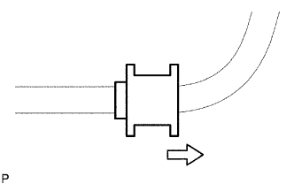

ЗАДНИЙ СТАБИЛИЗАТОР ПОПЕРЕЧНОЙ УСТОЙЧИВОСТИ (для моделей без KDSS) > УСТАНОВКА |
| 1. УСТАНОВИТЕ ЗАДНИЙ СТАБИЛИЗАТОР |
|  |
Установите 2 втулки стабилизатора на штангу стабилизатора.
 | Наружная сторона |
Установите штангу стабилизатора и 2 кронштейна стабилизатора, закрепив их 4 болтами.
| 2. УСТАНОВИТЕ ЛЕВУЮ СТОЙКУ ЗАДНЕГО СТАБИЛИЗАТОРА В СБОРЕ |
Установите стойку стабилизатора и закрепите ее новой гайкой.
Установите 2 держателя и подушку на стойку стабилизатора.
Зафиксируйте стойку стабилизатора гаечным ключом, а затем закрепите держатель, подушку и стойку с помощью новой гайки.
| 3. УСТАНОВИТЕ ПРАВУЮ СТОЙКУ ЗАДНЕГО СТАБИЛИЗАТОРА В СБОРЕ |
| 4. УСТАНОВИТЕ ЗАДНЕЕ КОЛЕСО |